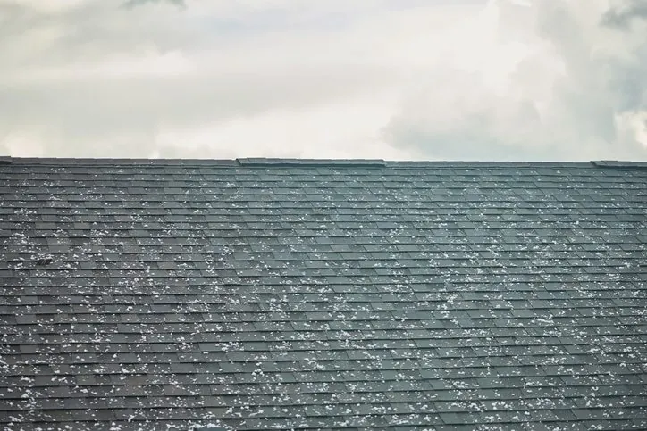

American Roofing is your leading source for roof hail damage roof repair and replacement in Salt Lake City, UT. Keep your roof and home safe with American Roofing.
Your home’s roof is vital in keeping the interior safe from the elements. Damage to the roofing can cause further structural problems below.
American Roofing Company is your leading local roofing contractor and source for roof hail damage repair and replacement. We have been in business since 1954 and apply our extensive knowledge and experience to provide the best service for your roofing needs.
Request Free Quote!
What Is Hail Damage?
Hail occurs when ice forms inside the updrafts of thunderstorms. The ice can present as tiny pellets or large balls. Hailstones of all sizes can cause significant damage to your property.
Ice hitting your roof can crack or crush shingles or tiles. The cracks then allow moisture to seep through the roofing materials into the structure below. Widespread moisture damage can lead to more significant problems within your living space.
Strong winds often make hailstorms more intense, resulting in severe damage. Besides propelling hail into your roof, wind can tear shingles from your roof deck. Any storm-related damage requires immediate attention and repair.
What Are Some Signs That Hail Damage Has Occurred?
Before even stepping foot on the roof, you can look for hail damage signs.
Look for Damaged Shingles
Signs of hail damage to a shingle roof include granules or pieces of shingles in the gutters or drains. Once on the roof, look for bruised shingles or shingles that feel soft or mushy. Look for random pitting as well.
Look for Dents
When a roof has experienced hail damage it will have a mixture of dents, cracks, and splinters. The dents will vary in size depending on how big the hail is.
Look for Materials and Shingles in the Gutters and on the Ground
Wood, slate, and tile roofing may crack and break, resulting in small bits of the material in the gutters or on the ground. Check on the roof for cracks and breaks in the shingles if you can’t see any from the ground.
If there are any signs that your roof has been damaged by hail it is important to begin repairs and prevent further damage to your roof. If you don’t repair or replace a hail-damaged roof, the damaged sections won’t protect against moisture and other climate conditions. Contact your roofing contractors nearby to get a quote and begin repairs.
What Does Hail Damage Do to a Roof?
Along with cracking and damaging shingles, hail damage can expose and even destroy the deck below. Once the outer layers of your roof get compromised, your home becomes more vulnerable to damage.
How Do Different Sizes of Hail Impact Your Roof’s Home?
Hailstones ranging from three-quarters of an inch to two inches in diameter can cause damage to a roof. Larger hail is likely to cause more damage, but wind is often the determining factor. When blown into a roof by strong winds, even tiny stones can penetrate shingles and other materials.
How Big Does Hail Have to be for Roof Hail Damage?
Any size of hail can damage your roof. It’s essential to remember that it’s not solely the size of the hail; wind speed also plays a big part in the danger of hail damage.
Residential Roof Hail Damage Repair
Your home is more than just a building—it’s where your family creates memories and finds shelter from the elements. Residential roof hail damage can compromise this sanctuary in several ways:
Protection of Your Investment
Unrepaired hail damage can lead to decreased property value and complicate future real estate transactions. Insurance adjusters and home inspectors are trained to spot signs of previous hail damage, which could affect your ability to sell your home or result in lower offers from potential buyers.
Prevention of Secondary Damage

What starts as minor hail damage can escalate into major structural issues. When hail compromises your shingles, it creates entry points for water that can lead to:
Attic and ceiling damage
Growth of harmful mold and mildew
Compromised insulation efficiency
Interior wall and paint damage
Electrical system hazards
Family Health and Safety
Damaged roofing can create unhealthy living conditions that impact your family’s well-being. Water infiltration from hail damage is particularly concerning as it can significantly degrade your indoor air quality through the growth of mold and the introduction of allergens.
Energy Efficiency
Residential roof hail damage can severely impact your home’s thermal envelope, creating a cascade of energy-related issues. When your roof’s integrity is compromised, your heating and cooling systems must work harder to maintain comfortable temperatures, resulting in significantly higher utility bills. You may notice inconsistent temperatures throughout your home, with some rooms too hot or too cold.
Commercial Roof Hail Damage Repair
Commercial roof hail damage creates unique challenges that extend beyond physical damage. Unaddressed roof damage can force business closures, put expensive equipment and inventory at risk, and disrupt operations.
Property owners face liability concerns, including tenant safety, workers’ compensation claims, and building code compliance. A damaged roof can also affect a professional image, potentially impacting client perception and tenant retention.
Prompt repairs are crucial to prevent escalating costs, maintain insurance coverage, and preserve property value. American Roofing Company specializes in commercial roof hail damage repair, ensuring your business assets remain protected while meeting all regulatory requirements.
Contact American Roofing Company for Roof Hail Damage Repair
American Roofing Company has decades of experience repairing and replacing roofing damaged by hail. If a hailstorm has affected your home, contact us for a free quote.
Roof Hail Damage Repair FAQs
Roof hail damage is a serious topic. Whether you’re a new homeowner or you’ve owned for years, it’s essential to keep up with your knowledge of how to protect your home from danger. Hail is a ruthless weather phenomenon; an ill-prepared house is prone to thousands of dollars worth of damages. Here are a few questions other homeowners have asked that might be helpful to you:
Servicing the Greater Salt Lake City Area And More
Yes, even the smallest cracks in your roofing can allow water to enter.
Can a roof be hail-proof?
Certain things can be done to a roof to protect it against roof hail damage. For example, rubber roofing is a solid option; however, no roofing is 100% hail-proof.
How fast does hail fall?
Hailstones measuring 1-2 inches in diameter can fall at speeds of 25-40 miles per hour.
How long does a shingle roof last?
An asphalt shingle roof lasts about 20-30 years if properly maintained. Proper maintenance includes periodic inspections and repairs after storms to seal damaged areas.
Are older roofs more prone to hail damage?
If a roof is older, it may be more susceptible to hail damage. The same goes for a roof that isn’t adequately taken care of.
Can hail damage a sunroof?
Yes, it can. Hail can damage just about anything, but like with everything else, there are precautions you can take to minimize the damage, such as using laminated or tempered glass or polycarbonate panels. You can also look into installing sunroof or skylight shields.
Reviews
What our clients are saying
★★★★★
I hired American Roofing after experiencing some hail damage to the roof of our home. The overall process was great. American Roofing was quick at getting an estimator to give us a price, helped us navigate our home owners insurance process, and were right on time starting the project. We did run into a few bumps throughout the process and American Roofing really stepped up to make sure it was resolved timely and to our satisfaction. They answered calls on weekends and after hours and put getting these fixed at the top of their list. I have been extremely happy hiring American Roofing and would recommend them to everyone. They are a longstanding company and Get Gephart recommended for a reason. Hire these guys.
Nicholas Highsmith
★★★★★
Our entire neighborhood was hit by a massive hail storm at the end of the summer and everyone needed new roofs. We had heard great things about American Roofing and decided to use them for our repairs. Andrew was great to work with and made sure that our insurance appraisal covered the cost of all of the repairs that were needed. He also checked in with us a few times when he was in the neighborhood and saw us outside and while the crew was working on our roof. We were very happy with the work that was done and the way that our requests and preferences were accommodated. We also had our gutters replaced through American Roofing and were extremely pleased with the job that was done. They went above and beyond and were quick to come back and add something that had been overlooked the first time they were there. We’ve suggested American to a lot of neighbors who were in our same situation and those neighbors have used them and loved them as well
Amberly L
★★★★★
Fantastic roof, reasonable and fair pricing and our sales rep. Andrew Y. was exceptional to work with. This is the second house American has roofed for me and I couldn’t imagine going elsewhere. Also, a shout out to their hardworking roofing crew. They did a great job and I’m very happy with my brand new roof.
Andy Hatch
★★★★★
I definitely recommend going with American Roofing. I had an unusual roof with several ridges and angles. It would be difficult for anyone but they did an awesome job and at a competitive price. The roofing material was top notch. It is worth it to get the best with reliable workmanship and all their guarantees.
Nick Ortman
★★★★★
I worked with Andrew to help me understand the cause of the problem and get a quote for the repair work. He was very knowledgeable, had a quote written up while he was onsite, and kept me informed on the schedule and progress. All my questions were answered and the work done by the crew was excellent. Outstanding!
Bruce Wales
Free estimates
Get a straight answer about your roof.
Free roof evaluation. We'll explain what we find, and if it can be repaired, we won't sell you a replacement.